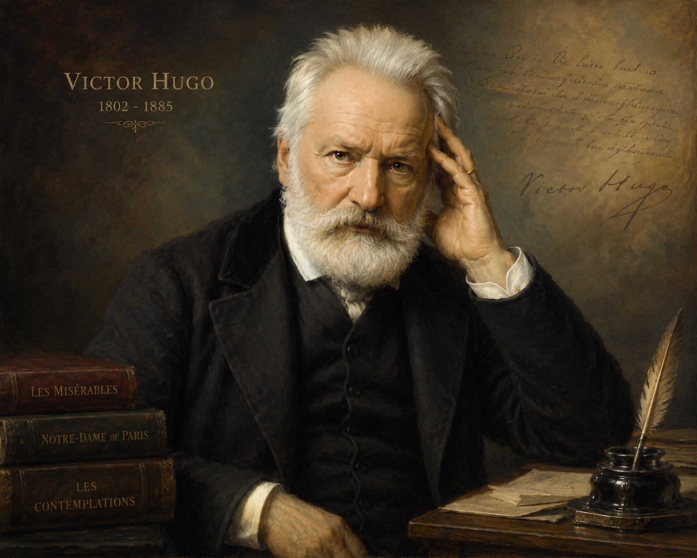

(Trích Những người khốn khổ - Vích-to Huy-gô / Victor Hugo)
• Bạn hình dung như thế nào về một người có uy quyền?
• Bạn đã từng đọc cuốn sách hay xem bộ phim nào mà trong đó có nhân vật thực sự là một người uy quyền? Bạn hãy chia sẻ ấn tượng của mình về nhân vật ấy.

Hình 1: Vích-to Huy-gô (1802 - 1885)• Vị trí: Là nhà thơ, nhà tiểu thuyết, nhà viết kịch đại tài của nước Pháp, ông trùm của chủ nghĩa lãng mạn Pháp thế kỉ XIX.
• Tác phẩm tiêu biểu: Nhà thờ Đức Bà Pa-ri (1831), Những người khốn khổ (1862), Lao động biển cả (1866), Thằng cười (1869), Chín mươi ba (1874)...
• Tưởng nhân đạo sâu sắc: Các tác phẩm chan chứa tình yêu thương con người lao động nghèo khổ, thể hiện niềm tin mãnh liệt vào bản chất thiện lương và khát vọng công lý.
• Bối cảnh: Nước Pháp những năm đầu thế kỉ XIX. Cuộc sống khổ cực của nhân dân lao động dưới ách áp bức và sự tàn nhẫn của luật pháp vô tình.
• Nhân vật trung tâm: Giăng Van-giăng (Jean Valjean) - người tù khổ sai 19 năm vì ăn cắp một ổ bánh mì nuôi đàn cháu đói, sau khi ra tù đã chuộc lại lỗi lầm bằng tình thương và sự hy sinh.
• Giá trị nghệ thuật & tư tưởng: Kết hợp tài tình giữa thực xót xa và lãng mạn bay bổng, tôn vinh các giá trị nhân đạo, lên án xã hội tư sản bất công.
Đoạn trích thuộc Chương 4, Quyển 8, Phần thứ nhất của tiểu thuyết. Đoạn trích thể hiện đỉnh điểm của xung đột giữa Giăng Van-giăng (dưới tên giả Ma-đơ-len - Thị trưởng) và thanh tra Gia-ve, đồng thời bộc lộ vẻ đẹp nhân đạo ngời sáng của Giăng Van-giăng trước cái chết của Phăng-tin.
• Bối cảnh không gian: Tại bệnh xá, nơi Phăng-tin - một nữ công nhân tội nghiệp đang nằm trên giường bệnh chờ đợi con gái Cô-đét (Cosette) trở về.
• Cuộc chạm trán bất ngờ: Giăng Van-giăng (Thị trưởng Ma-đơ-len) đã tự thú tại tòa án để cứu một người vô tội. Thanh tra Gia-ve ập đến bắt Giăng Van-giăng ngay trước mặt Phăng-tin, tạo nên một tình huống căng thẳng, kịch tính tột độ.
• Thái độ với Gia-ve: Nhẫn nhịn, điềm tĩnh, nhún nhường cầu xin 3 ngày để đi tìm con cho Phăng-tin. Sẵn sàng chịu tù giam chứ không hề hoảng sợ.
• Thái độ với Phăng-tin: Ân cần, dịu dàng, an ủi chị, hứa bảo vệ chị. Khi Phăng-tin trút hơi thở cuối cùng, ông ghé sát tai chị thì thầm những lời thiêng liêng.
• Uy quyền khôi phục: Khi Gia-ve hoạnh đọe, Giăng Van-giăng rút thanh sắt lỏng giường cầm chắc trong tay, đứng thẳng lên. Sức mạnh chính nghĩa và tình thương vĩ đại khiến tên mật thám bạo ngược Gia-ve phải run sợ lùi bước.
• Cuộc đời đầy bi kịch, hy sinh vì con gái Cô-đét.
• Khi nghe tiếng gầm của Gia-ve và sự thật phũ phàng rằng ông Ma-đơ-len chỉ là kẻ tù khổ sai, thế giới của chị hoàn toàn tan biến.
• Chị tắt thở trong đớn đau, nhưng nhờ nụ cười thiêng liêng từ lời thì thầm của Giăng Van-giăng, gương mặt chị "rạng rỡ lên một cách lạ thường".
| Tiêu chí | Gia-ve (Javert) | Giăng Van-giăng (Jean Valjean) |
|---|---|---|
| Địa vị / Vai trò | Mật thám, thanh tra cảnh sát (Đại diện pháp luật) | Tù khổ sai Ma-đơ-len / Thị trưởng (Đại diện nhân dân) |
| Động cơ hành động | Bắt bớ, thi hành luật pháp tàn nhẫn, hiếu sát | Cứu giúp Phăng-tin, thực hiện lời hứa tìm đứa trẻ |
| Sức mạnh / Uy quyền | Cường quyền tàn bạo, gieo rắc sợ hãi | Uy quyền đạo đức, lòng bác ái và tình thương vĩ đại |
Câu 1: Có thể chia đoạn trích làm mấy phần? Hãy xác định mối liên hệ giữa các phần ấy.
Hướng dẫn: Chia làm 2 phần chính:
• Phần 1: Từ đầu đến "Phăng-tin đã tắt thở" -> Gia-ve hạch sách, thể hiện sự tàn nhẫn khiến Phăng-tin sốc chết.
• Phần 2: Đoạn còn lại -> Giăng Van-giăng khôi phục uy quyền, thực hiện nghĩa cử cao đẹp với Phăng-tin và khuất phục Gia-ve.
Câu 3: Qua lời của người kể chuyện, nhân vật Gia-ve hiện lên như thế nào? Hãy nhận xét thái độ của người kể chuyện đối với nhân vật này.
Hướng dẫn: Người kể chuyện miêu tả Gia-ve bằng các từ ngữ tượng hình, so sánh với ác thú (gầm lên, cắm móc mỏ). Thái độ của tác giả là căm phẫn, lên án và ghê tởm bản chất tàn bạo của bộ máy công lý vô cảm.
Câu 7: Trong đoạn trích này, theo bạn, điều gì mới làm nên uy quyền của một con người?
Hướng dẫn: Uy quyền chân chính không đến từ quyền lực, địa vị hay sự đe dọa tàn bạo (như Gia-ve), mà xuất phát từ tình yêu thương, lòng nhân ái, sự hy sinh và bản lĩnh đạo đức cao cả (như Giăng Van-giăng).
Bộ tiểu thuyết Những người khốn khổ được Huy-gô ấp ủ và viết trong suốt gần 30 năm (từ 1845 đến 1862). Ngay khi xuất bản, cuốn sách đã tạo nên một cơn sốt văn học toàn cầu và được dịch ra hàng chục ngôn ngữ khác nhau.
Sưu tầm và tìm xem trọn bộ phim điện ảnh hoặc nhạc kịch Les Misérables để cảm nhận sâu sắc hơn vẻ đẹp âm nhạc và hình ảnh của tác phẩm kinh điển này.
Khi phân tích nhân vật trong tác phẩm lãng mạn, cần chú ý nghệ thuật tương phản đối lập: sự đối lập gay gắt giữa thiện và ác, giữa tình thương cao cả và sự tàn bạo vô cảm.
Đoạn trích ca ngợi uy quyền của lòng bác ái, tình thương yêu con người và sự hy sinh cao cả của Giăng Van-giăng. Đồng thời tố cáo thực trạng tàn nhẫn, vô cảm của xã hội bất công thời bấy giờ.
Thủ pháp tương phản đối lập sắc nét, xây dựng tình huống kịch tính, khắc họa tâm lý nhân vật tinh tế và giọng văn lãng mạn chan chứa tinh thần nhân đạo.
Chinh phục 10 câu hỏi để trở thành Triệu Phú Tri Thức!
Đang tải câu hỏi...
Trong tác phẩm, nếu thời lượng xuất hiện của Gia-ve là 40 phút và Giăng Van-giăng là 80 phút. Hãy viết tỉ lệ giản đơn giữa hai thời lượng dưới dạng phân số và tính phần trăm thời lượng của Giăng Van-giăng.
Lời giải chi tiết:
• Tỉ lệ thời lượng Gia-ve / Giăng Van-giăng = \( \frac{40}{80} = \frac{1}{2} \)
• Tổng thời lượng = \( 40 + 80 = 120 \) phút.
• Tỉ lệ phần trăm của Giăng Van-giăng = \( \frac{80}{120} \times 100\% \approx 66.67\% \)
Ý nghĩa: Thời lượng xuất hiện gấp đôi thể hiện tư tưởng chủ đạo của Huy-gô: ánh sáng nhân đạo luôn chiếm ưu thế vượt trội so với sự tàn bạo.
Hãy viết một đoạn văn ngắn (từ 10 - 12 câu) phân tích câu nói cuối cùng của Giăng Van-giăng với Gia-ve: "Giờ anh muốn làm gì thì làm."
Dàn ý & Lời giải chi tiết:
1. Câu nói thể hiện sự thanh thản tuyệt đối của Giăng Van-giăng sau khi đã hoàn thành trách nhiệm đạo đức với người đã khuất (Phăng-tin).
2. Ông không còn bận tâm đến sự đe dọa hay tù ngục của Gia-ve nữa, vì tâm hồn ông hoàn toàn tự do và trong sạch.
3. Đó là câu nói khẳng định sự chiến thắng của uy quyền tình thương đối với luật pháp tàn nhẫn vô cảm.